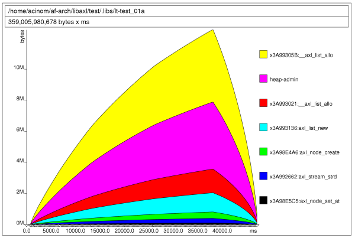

Axl memory usage report, evolution until 0.2.1
Axl memory usage report, evolution until 0.2.1
1. Introduction
The following information was gathered through several modifications performed to the libaxl library inside a machine with a intel pentium 4. This report covers the memory profile that the library has and compares that result with the libxml library.
It is in no way a complete library comparation at all, but provides some useful information about the motivations for building LibAxl library.
The implementation reference chosen was LibXml-2.0 mainly because it is the one being used until now within the Af-Arch and the Vortex Library projects.
Tool used to make the memory profiling is the valgrind tool and its extension to profile heap allocation and memory performance, called massif.
The test used for this memory usage report was the following for the case of Axl library results:
#include#include int main (int argc, char ** argv) { axlError ** error; /* top level definitions */ axlDoc * doc = NULL; /* initialize axl library */ if (! axl_init ()) { printf ("Unable to initialize Axl library\n"); return -1; } /* get current doc reference */ doc = axl_doc_parse_from_file ("large.xml", error); if (doc == NULL) return AXL_FALSE; /* cleanup axl library */ axl_end (); /* release the document */ axl_doc_free (doc); return AXL_TRUE; }
For the performance results get for the LibXMl-2.0 library, the test code was:
#include#include int main (int argc, char ** argv) { xmlDocPtr doc; /* init libXml */ LIBXML_TEST_VERSION /* load the document */ doc = xmlParseFile ("large.xml"); if (doc == NULL) { printf ("Failed to load the xml document.\n"); return -1; } /* release memory */ xmlFreeDoc (doc); xmlCleanupParser(); return 0; }
The xml file used is a glade file definition that is 650K sized aprox.
2. Initial status
Once the library reached its base features, XML parsing and DTD validation for a enough big validation data set, initial report to get current memory usage and memory consuption for the Axl Library without any modification was the following:
 Memory consuption for this initial state is was:(A) 273629 (F) 273629 (T) 3554854
evolution are covered using the massif reports identified by: 8779, 9323, 10661, 11755, 8755, 13488.
Memory improvement works started at massif.11755. After an initial work the library memory status, using the valgrind tool, was:
(A) 273629 (F) 273629 (T) 3554854
This shows that the library was consuming up to 3,5 megabytes to parse an xml document which is 632660 bytes. Before seing this results, it was applied a modification to the library to avoid double allocations/deallocations, produced by function that was receiving a chunk already allocated, and then making another copy.
Before applying this initial patch, results was the following:
(A) 212650 (F) 212650 (T) 3123296
Now the library perform, for the same task, supporting the same features, up to 60000 fewer allocations/deallocations operations, consuming around 3,1 megabytes.
On this stage the same test was runned using the libxml library. Here was the results:
(A) 127809 (F) 127809 (T) 4201579
This shows that libaxl is more memory efficient than libxml, after doing some minimal changes!! However the libxml library was performing fewer memory pairs (alloc and dealloc operations).
After analize current implementation it was detected that some function, especially axl_stream_get_until was allocating memory that was returned as a reference that could be usable from the user space, but the axl stream implementation was forcing the user space to perform a new allocation to get a copy.
After modifying the library, adding a new api to allow the axl stream to nullify the reference returned so the user space could be the only owner of the memory returned, new test results was:
(A) 199962 (F) 199962 (T) 3014631
On this case, memory usage improvement was not so great. Massif report was covered by massif.13488
Then a new change was applied to the axl_stream_get_until function, which was creating an array to iterate the chunk set to match to later free it. After making the library to create for each stream this structured and deallocate it once the stream is destroyed, results got was:
(A) 139088 (F) 139088 (T) 1937471
The change applied was really great, now the library was under the 2 megabyte limit and memory pairs produced was similar to the libxml library. Massif report covering results was: massif.1980